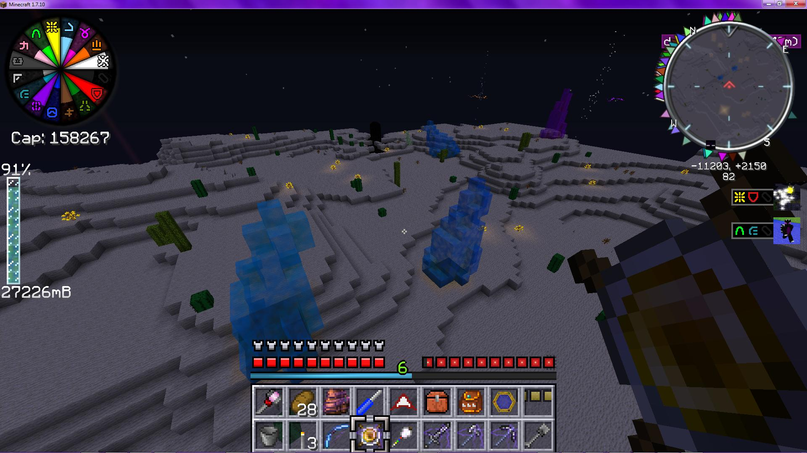

Overview
GeoStrata is a small mod to diversify underground world generation, making mining and caves more interesting, while simultaneously adding many aesthetic and functional building materials.Its basic premise is that it adds a bunch of real-world rock types which overwrite 10-20% of vanilla stone. These rocks generate at realistic depths, and in realistic biomes (for example, shale and limestone, being silt/mud rocks, spawn more often in oceans, and cannot spawn in deserts). These stones cannot overwrite ores, nor do they block ores from spawning.
GeoStrata cobble can be used as vanilla cobble for use in properly-coded recipes.
Not all rocks are created equal; some are harder to mine and require better pickaxes. However, these ones also have greater blast resistances, with granite and hornfel being the hardest to destroy. Soft rock like shale is the most easily destroyed.
GeoStrata rock behaves like vanilla stone with pickaxes - it generates as smooth stone, drops cobblestone (unless using silk touch), can be smelted into smooth, and smooth can be crafted into bricks. By combining smooth and bricks in various forms, a large variety of other designs and patterns are available, granting hundreds of permutations to choose from.
Rock Types
- Granite
- Basalt
- Marble
- Limestone
- Shale
- Sandstone
- Pumice
- Slate
- Gneiss
- Peridotite
- Quartz
- Granulite
- Hornfel
- Migmatite
- Schist
- Onyx
- Opal
Vents
GeoStrata also generates vents in the floors of caves, including under bodies of liquid. Vents are normally dormant, but occasionally fire for a few seconds, emitting sound, particles, and giving various effects.Vents come in several types, some of which are dangerous:
- Steam vents emit white smoke particles and deal 0.5 hearts of damage per second to mobs standing on them
- Smoke vents emit black smoke and deal no damage, but do prevent air replenishment
- Fire vents emit flames and light mobs on top of them on fire, plus dealing 1 heart of damage per second
- Lava vents emit lava particles and deal 4 hearts of damage per second, in addition to lighting mobs and blocks on fire
- Gas vents emit potion particles and deal an area-of-effect poison potion effect
- Water vents can hurt endermen, extinguish burning entities, and accelerate crop growth
- Cryo vents can freeze their surroundings
- Ender vents (end only), cause random teleportations in a small area
- Pyro vents (nether only) are like superpowerful fire and lava vents - they deal severe fire damage and can ignite large areas.

Other Blocks
Some vanilla blocks can also be crafted into brick variants, but keeping their original properties, like redstone, glowstone, and obsidian. GeoStrata also adds a few other block types, including formations of glowing crystals, semimolten "lava rock" near deep lava, spires of crystal in the ocean, beautiful (and highly tradeable) Void Opals floating in the void of the End, and the rare but valuable "flux crystals", which can act as a growable battery.There is also a "partial bounds block", which can have its six sides set to any position with in the block and be coated with any block, allowing for freeform geometry with any appearance.

Four glowing crystal spires, showing two of four colors.
Special Blocks And Biomes
Geostrata adds two special kinds of block, both of which - optionally - will create small patches of special biomes around them when they generate.The first is creepvine, a kelplike underwater plant which will spawn at low to moderate depths (6-18 blocks). This plant has two variants, a 'basic' version and a 'fertile' version. Fertile ones only spawn in the deeper range of the allowable depths, and contain clusters of glowing yellow seed pods around the middle of the plant. These seed pods can be harvested and used as crafting/industrial ingredients, and will slowly regrow.
If enabled, creepvine will spawn in small "Kelp Forest" biome patches, which have minimal functional difference from ocean but are aesthetically more fitting.
The second block type is actually two variant of vanilla packed ice, a snowy white version and a smooth slightly-luminous glacial blue version. These variants spawn in the form of large conical structures that can appear in clusters in Ice Plains biomes. Like with creepvine, these have an optional minibiome surrounding them, the Arctic Spires. This biome is bitterly cold, so much so that it can be dangerous to be outside without shelter or another source of heat. Icy ore veins can also be found scattered among the spires' bases.
Configuration Settings
This mod contains several config options to modify values and behaviors - such as for balance or server safety concerns, or simply personal taste - to your preferences. Note that several settings may have bounds imposed on their values, either logically or explicitly; these can usually be seen in the actual settings files or ingame. These are listed in order found in the source code, which is generally the order in which they were added; They may be present in a different order ingame or in the configuration files.The settings for the mod, when installed, can be found in the 'config/Reika' subfolder of the MC instance.
Generate Rock in the Twilight Forest
Type: booleanCurrent Default Value:
true
Generate Rock in Other Dimensions
Type: booleanCurrent Default Value:
true
Alternate Brick Recipes
Type: booleanCurrent Default Value:
false
Rock Density
Type: floatCurrent Default Value:
1F
Vent Density
Type: floatCurrent Default Value:
1F
Decoration Density
Type: floatCurrent Default Value:
1F
Crystal Density
Type: floatCurrent Default Value:
1F
Lava Rock Density
Type: floatCurrent Default Value:
1F
Glowing Vine Density
Type: floatCurrent Default Value:
1F
Flux Crystal Density
Type: floatCurrent Default Value:
1F
Ore Mode
Type: intCurrent Default Value:
0
Retrogeneration
Type: booleanCurrent Default Value:
false
Waila Overlay
Type: booleanCurrent Default Value:
true
Opal Color Frequency
Type: floatCurrent Default Value:
1F
Opal Hue Offset (degrees)
Type: intCurrent Default Value:
0
Rock Generation Pattern
Type: StringCurrent Default Value:
Legacy
Flux Crystal Requires Activation
Type: booleanCurrent Default Value:
false
Rock Can Generate Into Other Rock
Type: booleanCurrent Default Value:
true